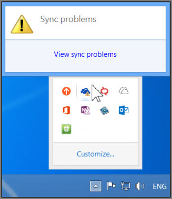
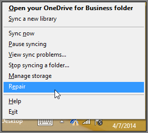
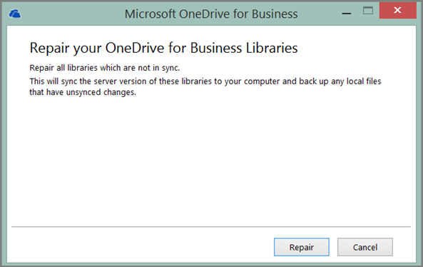
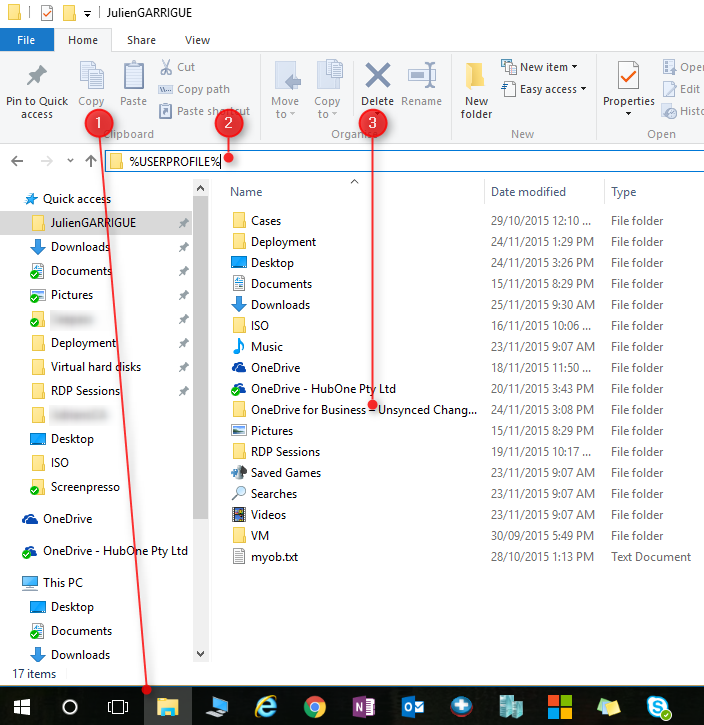

|
<< Click to Display Table of Contents >> Navigation: Knowledgebase and FAQ > Repair OneDrive for Business |
First of all, close all your office programs.
You can fix sync errors you get while you use the OneDrive for Business sync app by choosing View sync problems in the OneDrive for Business menu in the system tray.

An error dialog box opens that describes any current sync problems and suggests actions you can take to fix them. Sometimes, you might prefer to just clear all sync errors at once, or you might see this error:
“An error occurred while attempting to synchronize this document library”
In either case, you can run Repair instead of trying to fix each sync error one at a time.
Reboot your computer to make sure no file or folder are busy by any software. Then, you can apply the next steps immediately after login to you computer
In the system tray, right-click or press and hold the OneDrive for Business menu icon , and then choose Repair.

In the dialog box, choose Repair.

Repair reports your progress until all sync connections are reset.
Choose Finish.
IMPORTANT Don’t restart your computer while Repair is running. If you have a timed auto-restart scheduled for your computer, postpone it until you’re sure Repair is finished.
If that doesn't fix, here is a plan B, follow these steps:
1.close OneDrive for Business by right clicking on the icon and select "Exit"
2.Right click in the task bar and select Task Manager > go to Details Tab find msosync.exe, right click on it and select "End task"
3.Go to “C:\Users\%username%\AppData\Local\Microsoft\Office\15.0\OfficeFileCache” and also delete all content from this folder. This is where all the caching from your files are stored.
4.Restart your computer and restart OneDrive
If that doesn't fix, here is a plan C:
1.Save your Onedrive folder by making a copy of it's whole content
2.close OneDrive for Business by right clicking on the icon and select "Exit"
3.Right click in the task bar and select Task Manager > go to Details Tab find msosync.exe, right click on it and select "End task"
4.Browse to “C:\Users\%username%\AppData\Local\Microsoft\Office\Spw” and delete all the content.
If some files have been disappeared, don't worry, they should be backed-up in a specific folder. To find them, follow these instructions:
1.Open the file Explorer
2.in the address bar, write %USERPROFILE% and hit Enter
3.You can browse the folder OneDrive for Business - Unsynced Changes
